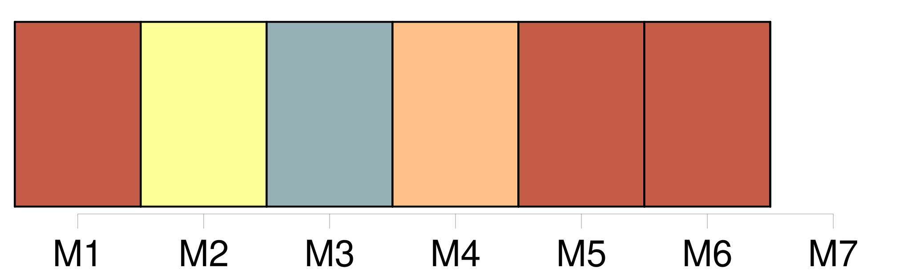
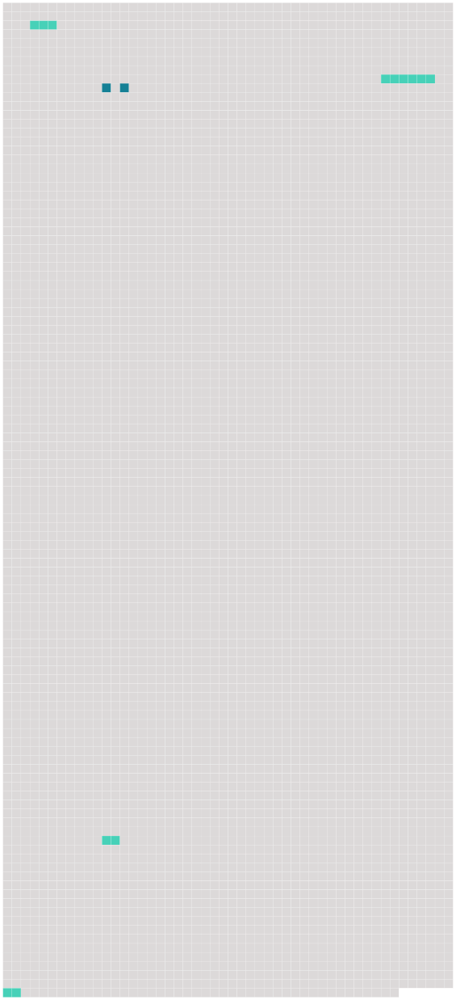

Longueur nb maillons : 6 mentions |
 |
Toutes portaient à leur angle le blason de la famille et l'âge du personnage représenté ; mais, que le chiffre fût bas ou élevé, il n'existait pas une différence bien appréciable entre ces têtes aux lumières jaunes, aux ombres carbonisées, enfumées de vernis et saupoudrées de poussière ; deux ou trois de ces toiles chancies et couvertes d'une fleur de moisissure présentaient des tons de cadavre en décomposition, et prouvaient, de la part du dernier descendant de ces hommes de race et d'épée, une indifférence complète à l'endroit des effigies de [ses nobles aïeux] [8 phrases]
À moins d'être un esprit, il n'eût point été prudent de s'y asseoir, et, sans doute, ces sièges ne servaient que lorsque le conciliabule [des ancêtres sortis de leurs cadres] venaient prendre place à la table inoccupée, et devant un souper imaginaire [causaient] entre [eux] de la décadence de la famille pendant les longues nuits d'hiver si favorables aux agapes de spectres. [98 phrases]
D'une famille jadis puissante et riche il ne restait qu'un rejeton isolé, errant comme une ombre dans ce manoir peuplé par [ses aïeux] ; d'une livrée nombreuse il n'existait plus qu'un seul domestique, serviteur par dévouement, qui ne pouvait être remplacé ; d'une meute de trente chiens courants il ne survivait qu'un chien unique, presque aveugle et tout gris de vieillesse, et un chat noir servait d'âme au logis désert. [22 phrases]
[Ses aïeux] s'étaient ruinés de différentes manières, soit par le jeu, soit par la guerre ou par le vain désir de briller, en sorte que chaque génération avait légué à l'autre un patrimoine de plus en plus diminué. |
 |
Il est possible de télécharger la ressource sur la page Ortolang |
Si vous avez des questions ou vous voyez des erreurs, merci d'envoyer un mail à silvia.federzoni89@gmail.com |